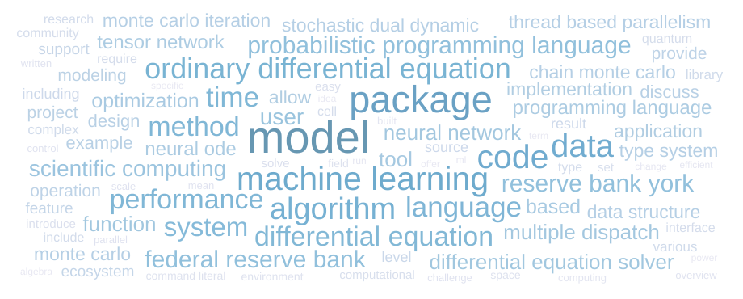

Using Vega with One Data Source
Word Cloud
using Vega, DataFrames
data = DataFrame(text = ["computing", "scientific", "neural ode", "complex", "parallel", "recommender system", "multiple dispatch", "stochastic dual dynamic", "data", "overview", "environment", "user", "package environment", "factor graph based", "solve", "operation", "include", "mean", "tool", "programming language", "federal reserve bank", "monte carlo iteration", "based", "example", "command literal", "efficient", "provide", "experience", "approach", "tensor network", "monte carlo", "quantum", "set", "data type", "dual dynamic programming", "cell", "support", "method", "time", "computational", "analysis", "estimation", "allow", "language", "libraries", "space", "thread based parallelism", "system", "machine learning model", "modeling", "offer", "including", "differential equation solver", "software", "computer science", "neural ordinary differential", "implemented", "solution", "nonlinear", "demonstrate", "parameter", "community", "deploying web server", "scientific computing", "implementation", "probabilistic programming system", "machine learning", "chain monte carlo", "change", "deep learning", "run", "development", "data science", "library", "specific", "markov chain monte", "term", "introduce", "design", "software development", "presentation", "model", "written", "trajectory optimization", "literate programming", "package", "idea", "time series data", "scale", "level", "tensor network algorithm", "various", "interface", "ordinary differential equation", "version", "research", "result", "discuss lessons learned", "function", "parallelism", "bank york federal", "differential equation", "minority class instance", "information", "probabilistic programming", "dynamic stochastic equilibrium", "diversity inclusion", "inference", "source", "probabilistic programming language", "built", "simulation", "explore", "control", "algebra", "ecosystem", "york federal reserve", "partial differential equation", "package manager", "easy", "feature", "ms mib mib", "data structure", "code", "available", "neural network", "ha model", "computation", "field", "challenge", "framework", "require", "ml", "code snippets", "dynamic programming sddp", "source file", "algorithm", "optimization", "discuss", "power", "sampling approach", "distributed", "solving", "federal reserve system", "aircraft", "project", "application", "technique", "performance", "reserve bank york", "type system", "qsp model", "type", "process"], count = [18, 18, 40, 25, 19, 20, 44, 36, 84, 19, 20, 49, 24, 27, 21, 32, 24, 19, 43, 40, 54, 36, 42, 34, 20, 17, 32, 17, 21, 40, 36, 23, 22, 20, 36, 23, 28, 66, 67, 22, 22, 19, 38, 68, 16, 20, 36, 62, 36, 33, 16, 26, 45, 16, 20, 36, 19, 18, 16, 23, 25, 23, 27, 48, 38, 36, 88, 36, 17, 20, 17, 32, 24, 25, 16, 36, 16, 21, 34, 20, 16, 144, 19, 20, 20, 109, 16, 27, 19, 27, 27, 25, 23, 72, 20, 24, 26, 27, 45, 18, 36, 64, 27, 17, 20, 27, 20, 21, 26, 54, 18, 17, 16, 19, 16, 29, 36, 27, 28, 21, 29, 27, 36, 87, 21, 44, 20, 28, 20, 19, 19, 23, 17, 20, 36, 32, 77, 41, 34, 16, 24, 19, 18, 36, 16, 33, 38, 24, 66, 54, 36, 20, 24, 19])
word_cloud_spec = vg"""{
"width": 900,
"height": 350,
"padding": 10,
"data": [
{
"name": "table"
}
],
"scales": [
{
"name": "color",
"type": "log",
"domain": {"data": "table", "field": "count"},
"range": {"scheme": "purpleblue"}
}
],
"marks": [
{
"type": "text",
"from": {"data": "table"},
"encode": {
"enter": {
"text": {"field": "text"},
"align": {"value": "center"},
"baseline": {"value": "alphabetic"},
"fill": {"scale": "color", "field": "count"}
},
"update": {
"fillOpacity": {"value": 0.6}
},
"hover": {
"fillOpacity": {"value": 1.0}
}
},
"transform": [
{
"type": "wordcloud",
"size": [{"signal": "width"}, {"signal": "height"}],
"text": {"field": "text"},
"font": "Helvetica Neue, Arial",
"fontSize": {"field": "datum.count"},
"fontSizeRange": [12, 56],
"padding": 2
}
]
}
]
}"""(data, "table")